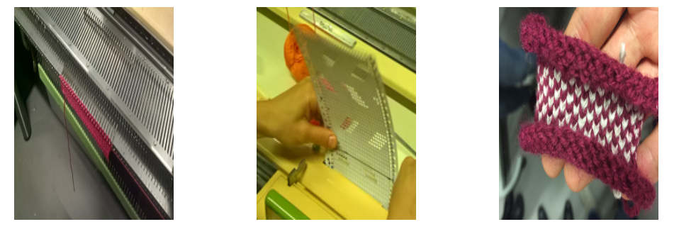
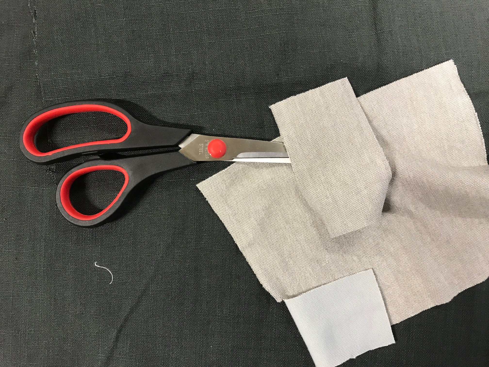
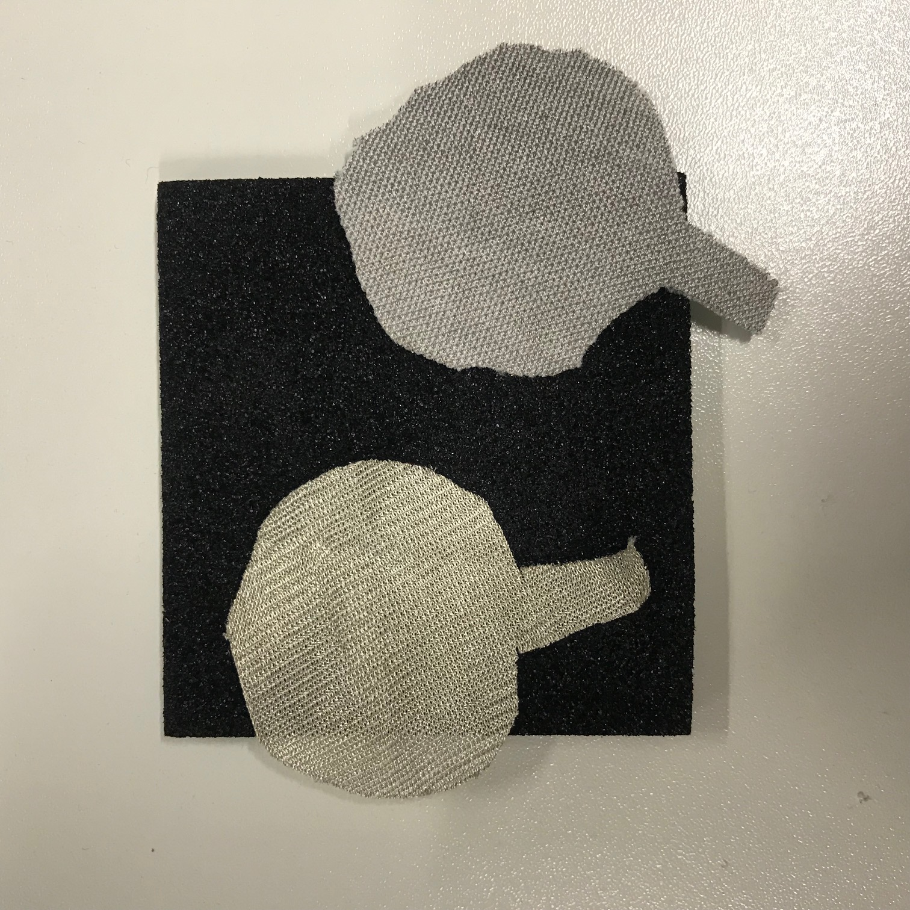
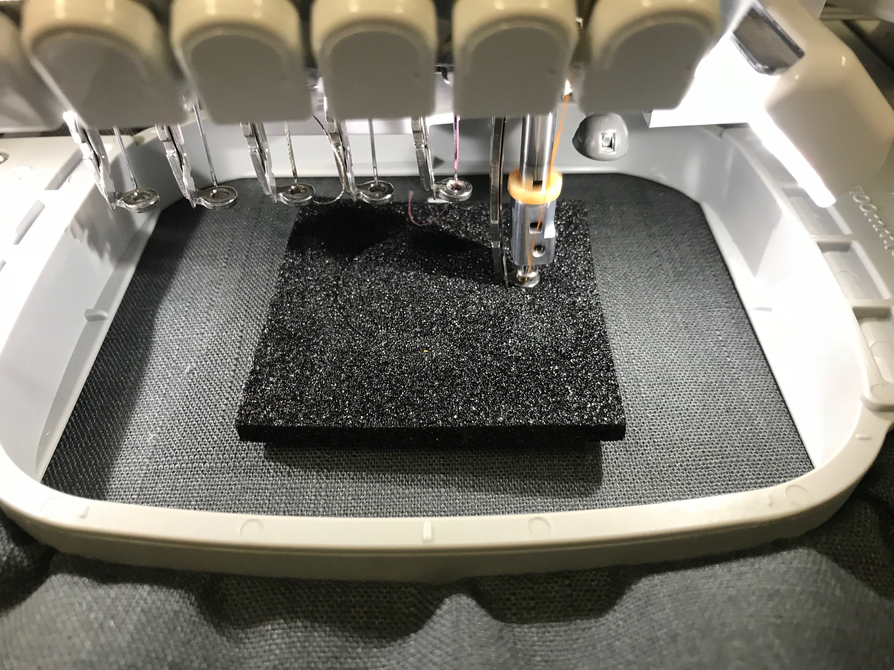
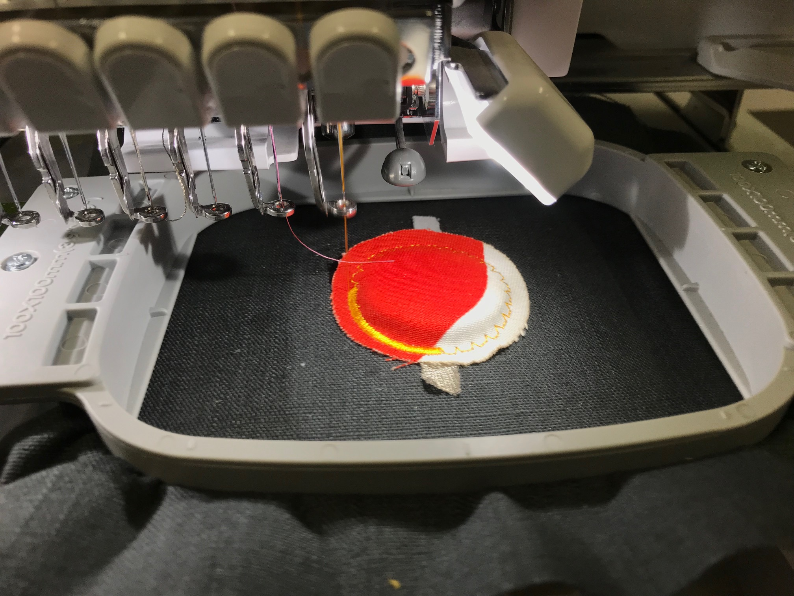
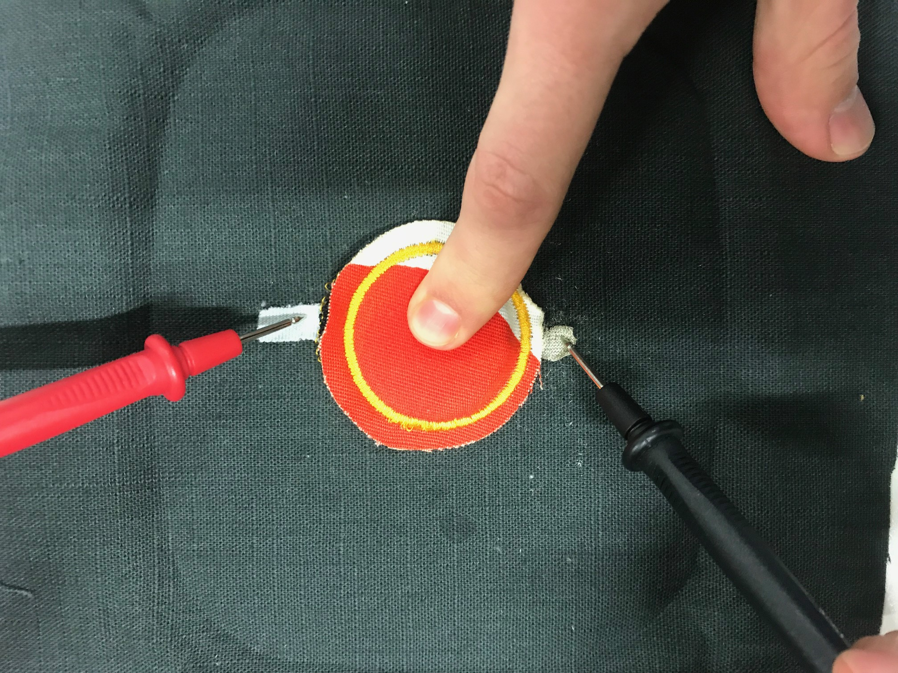

In order to use propperly the knitting machine, the working needles must be selected and put in right position. A type of comb must be placed and then the knitting machine device will be moved to both sides to start creating the piece of textile. A punch card must be added to the machine to create the knitting pattern. The needles can lose the position in the knitting devices is moved to fast.
For creating the DIY sensors we used the embrodery machine. In this case, the type of sensor we created is a pressure sensos. This means that this sensor will convert the pressure that is done over it into an electrical signal with different value depending on the force applied. In this case it is important to know that there are different type of materials needed for creating a sensor.
We need four different layers of material: we need a piece of fabric that will be used as a casing for the sensor, it can be from a simple fabric, or even leather; the next thing that we need are two different layers of conductive materials; and finally we need a layer of a material that will be put in between the different layer of conductive material and will serve as an isolator. We cut the different materials in the shape of the circle of diametre we programmed the sewing machine with.
The first step is to put the layer of protective material as a base for the embordering machine, this will be used to sewing the different layers together. We put the first layer of conductive material, then the second layer of isolative material, then the other layer of conductive material, and finally the layer we found appealing.It is important to put sealing spray in between the different layers since they can move with the needle of the embordering machine.
 The last step of the project is to use a potentiometer to measure the potential changes in the sensor when it is held down.
